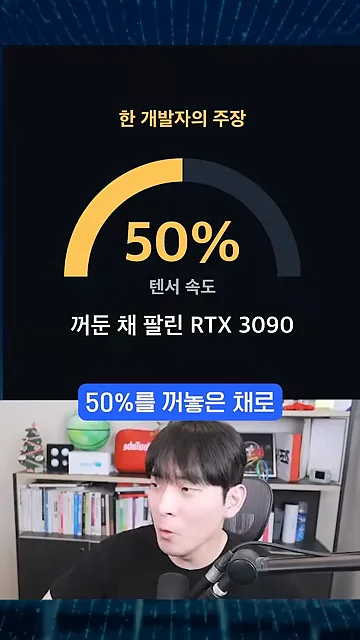
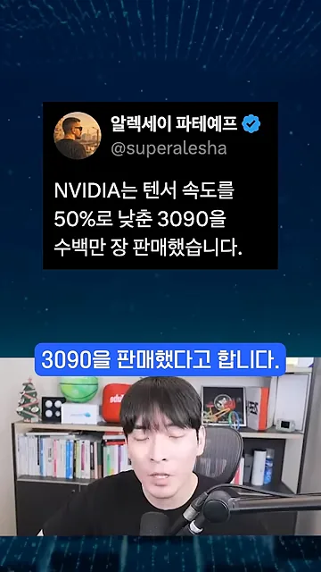
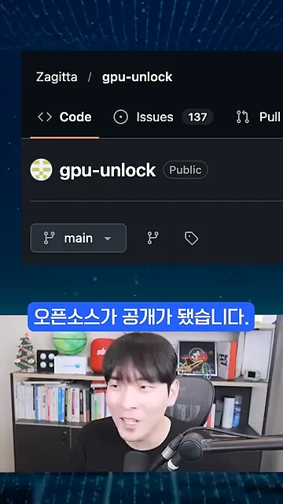
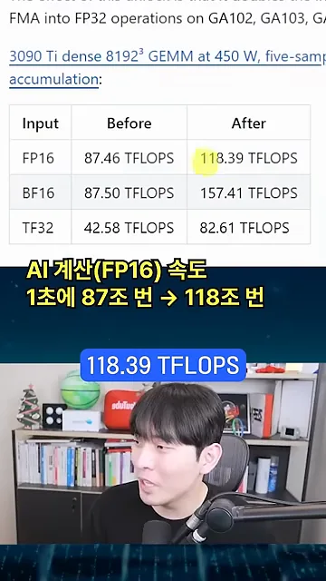
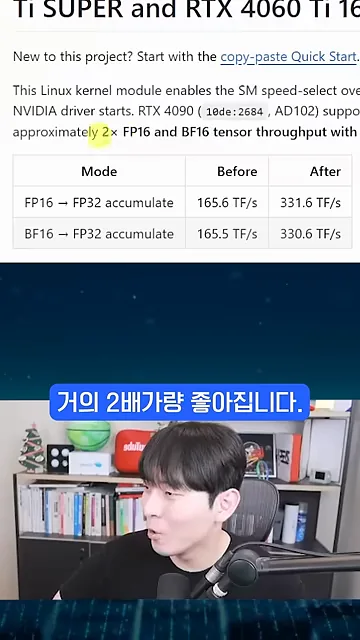

텐서 속도를 절반으로 묶어 팔았다는 주장
영상은 '엔비디아도 털렸다'는 한마디로 시작해요. 슬라이드 위쪽에 노란 글씨로 '한 개발자의 주장'이라고 적혀 있다는 점을 먼저 봐 두세요. 반원 게이지가 50%에서 멈춰 있고, 아래에 '텐서 속도 꺼둔 채 팔린 RTX 3090'이라고 써 있어요.

주장의 출처로 알렉세이 파테예프(@superalesha) 계정의 글이 이어져요. 엔비디아가 텐서 속도를 50%로 낮춘 3090을 수백만 장 팔았다는 내용이에요. 텐서 코어는 AI(Artificial Intelligence) 학습과 추론에서 행렬 곱셈을 맡는 부품이라, 이 속도가 절반이면 AI 작업이 그만큼 느려져요.

gpu-unlock과 실제로 빨라지는 숫자
이 제한을 푼 사람이 만든 오픈소스가 GitHub의 gpu-unlock이에요. 화면 위쪽 경로에 저장소 주인 Zagitta와 저장소 이름이 보이고, 이름 옆에 Public 표시가 있어요. 누구나 받아서 쓸 수 있는 공개 저장소라는 뜻이에요.

얼마나 빨라지는지는 저장소 문서의 측정표로 보여 줘요. 표 위 링크를 보면 RTX 3090 Ti를 450W로 돌려 8192×8192 크기의 행렬 곱셈을 잰 결과예요. 영상은 맨 윗줄 FP16을 짚어서 'AI 계산 속도가 1초에 87조 번에서 118조 번으로' 늘었다고 자막을 달았어요.

같은 표의 세 줄을 막대로 나란히 그려 보면 차이가 보여요. 영상이 읽은 FP16은 1.35배 정도이고, '2배 가까이'에 맞는 건 BF16과 TF32 쪽이에요. 그러니까 어떤 숫자 형식으로 계산하느냐에 따라 얻는 이득이 달라요.
4000번대도 될까요?
3000번대만 되느냐는 물음에 영상은 4000번대도 된다고 답해요. 화면은 같은 저장소 문서의 RTX 4090 표예요. FP16과 BF16 두 줄 모두 'FP32 accumulate', 즉 FP32 누산 조건으로 잰 값이에요.
